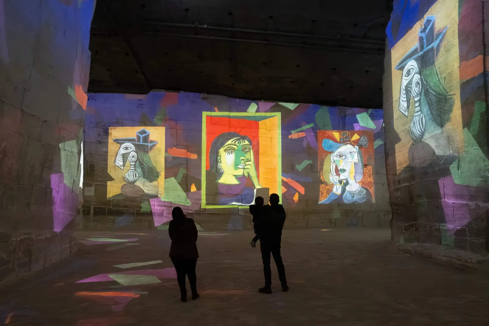

Weekend day-trips anchored on L'Oustau de Baumanière · 30 km radius
Rayonnement · Distances from Les Baux
Saint-Rémy12 km · 20 min
Fontvieille10 km · 15 min
Tarascon15 km · 20 min
Maussane6 km · 10 min
Les Baux de-Provence
★ Baumanière ≈ 200 m / 5 min walk
Carrières des Lumièreson foot · ≈ 5 min
Arles20 km · 30 min
Montmajour13 km · 20 min
Avignon ⚠35 km · 40 min · full day
on foot by car
Itinéraire · 3-Day Plan anchored on Saturday dinner

Carrières des Lumières, Les Baux — Picasso, l'art en mouvement (2026 programme) ·
[2]
Vendredi · Friday
Arrive · Les Baux on foot
Morning
Arrive at Baumanière. Walk up to Château des Baux (~10 min) and the village.
Siege-engine demos: 11:00 · 15:30 · 17:30 · Adult €10 [4]
Afternoon
Carrières des Lumières — ≈ 5-min walk from Baumanière.
2026: Picasso (40 min) + Frida Kahlo (14 min) · Jul–Aug 9:00–19:30 · €16.50 [1]Pass Baux (château + Carrières): worth it if visiting both. [1]
Tip
Avoid the main village street midday — lavender-soap shops and overpriced snacks. Late afternoon light is better once tour buses leave. [10]
Samedi · Saturday
Arles · 20 km / 30 min ★ Baumanière 20:00
08:00–13:00
Saturday market on Boulevard des Lices, Arles — ~450 vendors over 2 km, one of Provence's biggest.
Park at Parc du Centre (500 spaces, rue Émile Fassin, 24/7); Lamartine fills fast on Saturdays. [34]
After market
Arènes (Amphitheatre) — c. 90 AD, ~21,000 seats; still hosts bullfights + concerts.
May–Sep daily 9–19 · €11 [24]
L'Oustau de Baumanière — dinner reservation. 30-min drive back from Arles. No driving after wine.
Dimanche · Sunday
Alpilles trails · Saint-Rémy · Tasting
Morning
Mont Gaussier loop from Saint-Paul-de-Mausole — 8 km, 3h, 422 m gain; metal ladders near 306 m summit. GR6 (partly cairned). [36]⚠ Check fire-closure map at 18:00 the night before (1 Jun–30 Sep). [40]
Alpilles fire closure · 1 Jun–30 Sep
Trails closed by prefectural decree, published at 18:00 for the next day.
Check the map every evening in summer.
Green = open · Red = closed. [40]
💨
Mistral — skip ridge routes
Strong NW wind, avg 50 km/h, gusts to 100 km/h, can last days.
Risk of being blown off-balance on ridges; airborne debris. [53]
⚠
Avignon = full day, not a half-day
35 km / 40 min each way. Palais des Papes alone takes 1h30–2h before counting bridge, ramparts + Place de l'Horloge.
[76]
📸
Les Rencontres d'Arles — 6 Jul–4 Oct 2026
World's largest photography festival takes over heritage venues citywide. If visiting Arles in this window: book early, expect crowds and premium pricing. [32]
Pratique · Logistics
Best season
April–May and September–October — light, heat, crowds all right. [22]
Parking / Les Baux
No free spaces; all lots €5/1st hr, 8:00–19:00 year-round. €35 fine. Moot for Baumanière guests. [80]
Parking / Arles
Parc du Centre, 500 spaces, rue Émile Fassin, 24/7. Lamartine fills fast on Saturdays. [34]
Market shuttle
Free from Petite Crau car park to Saint-Rémy centre, every 15 min, Wed 9:00–13:00. [21]
Sunday closures
Most non-food shops shut; Tarascon château and Montmajour abbey closed Mondays. Businesses open Sunday often close Monday instead. [81]
Lavender
Peaks late June–mid July. Valensole plateau outside 30 km, but Château de la Gabelle (organic) has fields on the Saint-Rémy plain. [51]